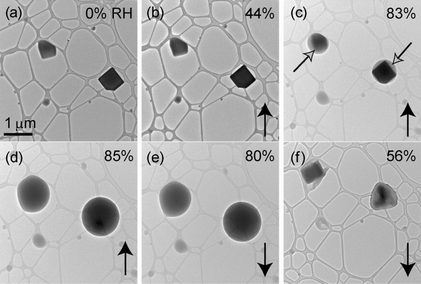
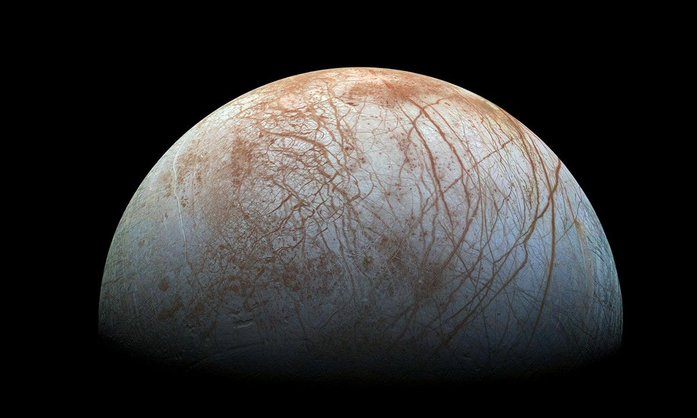

Microphysics in Exoplanet Atmospheres
Investigation of hygroscopic particles in atmospheres outside of Earth's, focusing on their role in cloud top height formation. This work focuses on modeling exoplanet and substellar atmospheres, examining the effects of salts to see how they take up water vapor in these exotic atmospheres.
Paper in Progress!
Martian Crater Rays and Lunar Cold Spots
How can we link surface processes between two different bodies? Mars has crater rays that are only visible in infrared, and the Moon has extremely cold regions called "cold spots". This research explores the similarities and differences in surface processes between these two celestial bodies, and proposes a link between their formation mechanisms.
Download Paper Here!
Surface Processes on Icy Moons
Europa is one of the most interesting moons in our solar system, with a subsurface ocean that may harbor life. This research focuses on JWST observations of Europa's surface, which revelaed areas with elevated H$_2$O$_2$ concentrations. We used laboratory experiments to study the formation and distribution of H$_2$O$_2$ in conjunction with small amounts of CO$_2$, potentially sourced from Europa's interior. The results show that H$_2$O$_2$ can be formed on icy surfaces through the interaction of solar radiation with water ice, and that the presence of CO$_2$ can enhance this process.
Download Paper Here!